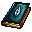
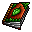
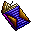
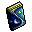
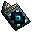
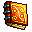

Tomes
Tomes are stat upgrades you level through level-up offers. You can hold four, and each stops at a level cap.
How tomes scale
- Each level adds a fixed amount of one stat, from the game's tome data (table below).
- Offer rarity multiplies that amount (Common ×1.0, Uncommon ×1.2, Rare ×1.4, Epic ×1.6, Legendary ×2.0), then the game rounds to two decimals (Rarity.GetMultiplier, StatUtility.GetRarityValue).
- The rounding matters for small stats. Cursed Tome is +3.5% Difficulty, which rounds to 4% on Common and Uncommon, 5% on Rare, 6% on Epic and 7% on Legendary. Luck (+8%) becomes 10% Uncommon, 11% Rare, 13% Epic and 16% Legendary.
- Luck decides which rarity you're offered (see the odds in Luck, chests & shrines), so it multiplies every other tome's growth.
- The level cap is 99, plus 10 for the first Wizard's Hat and 1 less for each extra copy (never below +2).
Which bracket each tome uses
From the game data (modifyType): Flat — Precision, Luck, Cursed, Armor, Evasion, Blood (Lifesteal), Shield, Health, Regen, Thorns, Quantity. % (Addition) — XP, Cooldown, Size, Duration, Projectile Speed, Knockback, Attraction, Agility, Golden, Silver. × (Multiplication) — Damage.
All tomes
| Tome | Stat | Per level (Common) | Unlock | Notes |
|---|---|---|---|---|
 XP |
XP gain | +7% | Break 20 pots in one run | More levels, more offers, more Gamba rolls. |
 Luck |
Luck | +8% | 0.01% drop chance per kill | Better offer and chest rarity. |
 Cursed Cursed |
Difficulty | +3.5%, rounded to 4% (7% at Legendary) | Beat a stage boss in under 5 minutes | More enemies and faster swarm refill. |
 Chaos Chaos |
One random stat per level | — | Charge every Charge Shrine in all 3 stages of one Tier 3 run | Silver and Jump Height excluded. |
 Precision Precision |
Crit Chance | +7% | Default | Crit past 100% overcrits. |
 Damage Damage |
Damage multiplier | ×(1 + 0.08 per level), its own × bracket | Default | Multiplies everything else; the strongest late pick. |
 Cooldown |
Attack Speed | +7.5% | Default | |
 Quantity Quantity |
Projectiles | +1 | Fire 5,000 projectiles | Only for weapons that fire projectiles. |
 Size Size |
Size | +10% | Default | Also grows item radii (Spicy Meatball, Tonic, Toxic Barrel, Holy Book…). |
 Duration |
Duration | +15% | Upgrade the Axe to level 10 | Also lengthens debuffs. |
 Projectile Speed Projectile Speed |
Projectile Speed | +15% | Default | |
 Knockback Knockback |
Knockback | +20% | Default | |
 Shield |
Shield | +25 | Default | The main survival pool in late swarms. |
 Health Health |
Max HP | +25 | Default | |
 Regen Regen |
HP Regen | +40 | Default | |
 Armor Armor |
Armor | +12% | Kill 5,000 enemies as Sir Oofie | Real reduction A / (A + 0.75). |
 Evasion Evasion |
Evasion | +10% | Default | Real chance E / (E + 1). |
 Bloody Bloody |
Lifesteal | +10% | Kill 12,500 enemies | |
| Thorns | Thorns | +15 | Block 250 attacks with Aegis | |
 Attraction Attraction |
Pickup Range | +75% | Use the Shrine of Succ 8 times | |
 Agility Agility |
Movement Speed | +15% | Default | |
 Golden |
Gold gain | +12% | Default | |
 Silver Silver |
Silver gain | +12% | Default | Meta currency, not run power. |
The game data also holds three tomes that are switched off and can't be offered: Balance, Gambler and Hoarder.
Which weapons each tome affects
Every weapon reads its stats through the same functions (WeaponUtility), each one weapon value × your stat. Whether a tome does anything depends on whether the weapon has that value and uses it. Tomes not listed here (XP, Luck, Cursed, Health, Shield, Armor, Evasion, Regen, Bloody, Thorns, Attraction, Agility, Golden, Silver) don't change weapons directly; Thorns is the exception for Aegis, whose blocks add your Thorns to their damage.
| Tome | Affects | Doesn't affect |
|---|---|---|
| Damage |
All weapons | — |
| Precision |
All weapons | — |
| Cooldown | All weapons | — |
| Quantity |
Aegis, Axe, Bananarang, Black Hole, Blood Magic, Bone, Bow, Chunkers, Corrupted Sword, Dexecutioner, Dice, Firestaff, Flamewalker, Hero Sword, Katana, Lightning Staff, Mines, Poison Flask, Revolver, Scythe, Shotgun, Slutty Rocket, Sniper Rifle, Sword, Tornado, Wireless Dagger | Aura (has no projectile count); Dragon's Breath (has no projectile count); Frostwalker (has no projectile count); Space Noodle (has no projectile count) |
| Size |
All weapons | — |
| Duration | Axe, Bananarang, Black Hole, Bone, Bow, Chunkers, Corrupted Sword, Dice, Dragon's Breath, Firestaff, Flamewalker, Frostwalker, Hero Sword, Mines, Poison Flask, Revolver, Space Noodle, Tornado, Wireless Dagger | Aegis (nothing timed to lengthen); Aura (nothing timed to lengthen); Blood Magic (its 0.75 s already sits at its 0.75 s cap); Dexecutioner (its 0.5 s already sits at its 0.5 s cap); Katana (its 0.5 s already sits at its 0.5 s cap); Lightning Staff (its 1 s already sits at its 1 s cap); Scythe (its 0.5 s already sits at its 0.5 s cap); Shotgun (its 0.8 s already sits at its 0.8 s cap); Slutty Rocket (its 5 s already sits at its 5 s cap); Sniper Rifle (its 1 s already sits at its 1 s cap); Sword (its 0.5 s already sits at its 0.5 s cap) |
| Projectile Speed |
Axe, Bananarang, Black Hole, Blood Magic, Bone, Bow, Chunkers, Corrupted Sword, Dice, Firestaff, Hero Sword, Poison Flask, Revolver, Slutty Rocket, Tornado, Wireless Dagger | Aegis (a shield around you); Aura (an aura); Dexecutioner (a swing); Dragon's Breath (a flame cone); Flamewalker (fire is left on the ground); Frostwalker (an aura); Katana (a swing, nothing travels); Lightning Staff (strikes from above); Mines (mines sit still); Scythe (a sweep); Shotgun (hits instantly); Sniper Rifle (hits instantly); Space Noodle (a beam); Sword (a swing) |
| Knockback |
Aegis, Aura, Axe, Bananarang, Black Hole, Blood Magic, Bone, Bow, Chunkers, Corrupted Sword, Dexecutioner, Dice, Dragon's Breath, Firestaff, Frostwalker, Hero Sword, Katana, Lightning Staff, Mines, Poison Flask, Revolver, Scythe, Shotgun, Slutty Rocket, Sniper Rifle, Space Noodle, Sword, Tornado, Wireless Dagger | Flamewalker (base knockback 0) |
Duration is capped per weapon: a weapon whose attack already lasts its maximum gains nothing (see Weapons for each cap). Size is capped only on Revolver (×4) and Wireless Dagger (×3.5).
Picking four
Data-first picks for a high-kill run: XP (levels), Luck (offer and chest rarity), Damage (the only × bracket tome), and Cursed or Precision: Cursed if you need more enemies, Precision for crit builds.